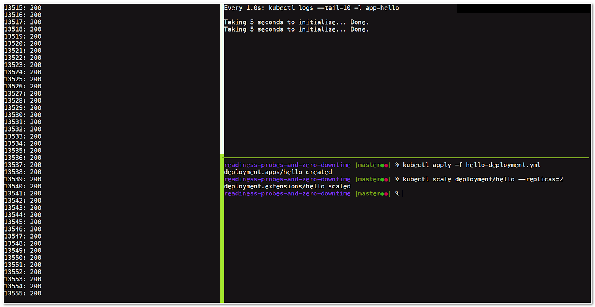

Last Updated: 2019-07-18
Why are readiness probes important?
In official Kubernetes documentation, readiness probes are described as: "The kubelet uses readiness probes to know when a Container is ready to start accepting traffic. A Pod is considered ready when all of its Containers are ready. One use of this signal is to control which Pods are used as backends for Services. When a Pod is not ready, it is removed from Service load balancers." --- Configure Liveness and Readiness Probes
The topic of readiness probes is also covered in the Observability part (18%) of CKAD (Certified Kubernetes Application Developer): "Understand LivenessProbes and ReadinessProbes".
However, application developers new to Kubernetes usually neglect the importance of readiness probes and have hard time troubleshooting when dealing with scaling, canary release, and ingress.
This codelab provides a simplified real-world example for you to practice the usefulness of readiness probes.
What you'll build
In this codelab, you're going to build 2 versions of a simple backend application written in Go. Your app will have these Kubernetes constructs:
- Deployment
- Service
- Ingress
You'll also use a simple load testing script to test the application.
What you'll learn
- How to perform basic load testing for Kubernetes applications and ingress controllers to identify potential weak points
- How to provide readiness probes for your Kubernetes applications
- How to make your simple stateless application scalable with nearly zero downtime
This codelab is focused on readiness probes. Non-relevant concepts and code blocks are glossed over and are provided for you to simply copy and paste.
What you'll need
- A recent version of Docker (18.09.2 or later)
- A recent version of Kubernetes (1.10.11 or later)
- Basic knowledge of Docker images and containers
- Basic knowledge of Kubernetes pods, deployments, and services.
Get the code
We've put everything you need for this project into a Git repo. To get started, you'll need to grab the code and open it in your favorite dev environment.
Strongly Recommended: Import the repo
Using git is the recommended method for working through this lab.
- Open a terminal window and change to a working directory for this lab.
- Clone the repo:
git clone https://github.com/William-Yeh/readiness-probes-and-zero-downtime.git - Change to the lab directory:
cd readiness-probes-and-zero-downtime
Alternative: Download the zip file
If you're not familiar with git, you may download the zip file and unpack the code locally.
- Unpack the downloaded zip file.
- Open a terminal window and change to the lab directory.
What's our starting point?
Our starting point is a basic backend app hello and a simple load testing script loadtest.sh designed for this codelab. The code has been overly simplified to show the concepts in this codelab, and it has little error handling. If you choose to reuse any of this code in a production app, make sure that you handle any errors and fully test all code.
Load testing script
In this lab we'll simply use curl as the core load tester. You may specify the target URL under test as the 1st argument and the delay (in seconds) per request loop as the 2nd argument. When the script receives HTTP status code 200, the string 200 will be printed in the 1st column; otherwise, other values will be printed in the 2nd column for clarity.
loadtest.sh
#!/bin/bash
#
# Ping for specified HTTP(S) endpoint continuously and display the status code.
#
TARGET=${1:-http://localhost:30000/}
DELAY_SECONDS=${2:-0.1}
i=0
while :
do
status=`curl --max-time 2 -o /dev/null -sw '%{http_code}' $TARGET`
if [ $status == "200" ]
then
echo "$i:" $status
else
echo "$i: " $status
fi
sleep $DELAY_SECONDS
let "i++"
doneStrongly Recommended: Linux-like toolchain
Using the bash script directly is the recommended method for working through this lab, especially for Linux, macOS, or WSL (Windows Subsystem for Linux) users.
Let's use the loadtest.sh script to test some public services such as httpbin.org:
$ loadtest/loadtest.sh http://httpbin.org
0: 200
1: 200
2: 200
3: 200
4: 200
5: 200
6: 200
7: 200
^CAll the 200 results are printed in the 1st column.
Alternative: Wrap the script in Docker
If you have trouble using the script directly, a Docker version is also provided. First, you'll need to build the loadtest image:
C:> docker build -t loadtest -f loadtest/Dockerfile loadtestNow, you can use the loadtest image to test some public services such as httpbin.org:
C:> docker run -it --rm loadtest http://httpbin.org
0: 200
1: 200
2: 200
3: 200
4: 200
5: 200
6: 200
7: 200
^CFor brevity, next sections will only demonstrate the load testing scenario with the loadtest.sh script.
Kubernetes service IP
By default, services and ingress in this lab are accessible on localhost. You'll be fine with the localhost if the Kubernetes cluster you're using for this lab is on Linux (e.g., on public clouds), or is provided by Docker Desktop, Community Edition on Windows/macOS.
If you're using Minikube, please replace localhost with your real minikube ip value.
The "Hello" app
The "hello" is a simple backend app written in Go.
It first takes a few seconds to initialize itself (can be overridden with command-line argument); after that, it exports 2 endpoints:
/health: Print "OK" with status code200.- Others: Print "Hello world!" for app
v1, and "HELLO WORLD!" forv2.
V1 & v2 only differ in the output. For brevity, only the v1 code snippet is listed as follows.
v1/hello.go
func main() {
if len(os.Args) > 1 {
if delay, err := strconv.Atoi(os.Args[1]); err == nil {
fmt.Printf("Taking %d seconds to initialize... ", delay)
time.Sleep(time.Duration(delay) * time.Second)
fmt.Println("Done.")
}
}
http.HandleFunc("/", func (w http.ResponseWriter, r *http.Request) {
fmt.Fprintf(w, "Hello world!")
})
http.HandleFunc("/health", func (w http.ResponseWriter, r *http.Request) {
fmt.Fprintf(w, "OK")
})
http.ListenAndServe(":80", nil)
}Let's build image for hello-v1:
$ docker build -t hello-v1 -f v1/Dockerfile v1Can you see the generated image?
$ docker images
REPOSITORY TAG IMAGE ID CREATED SIZE
hello-v1 latest 367aeaf2efd2 About a minute ago 12.9MB
...Now, let's invoke the hello-v1 app, and tell it to initialize itself for 5 seconds:
$ docker run -t --rm -p 30000:80 hello-v1 5
Taking 5 seconds to initialize... Done.
...Then, let's open another terminal to visit its service endpoints:
$ curl localhost:30000
Hello world!
$ curl localhost:30000/health
OKIt's your turn!
The hello-v2 app is quite similar, and is left to you as exercise.
Please do the following:
- Build the Docker image
hello-v2 - Invoke the
hello-v2app, and visit its endpoints.
What's next?
You've played with the hello app (hello-v1 & hello-v2) and the load testing script. Now it's time for Kubernetes!
Kubernetes is famous for its application scalability. By the end of this section, you'll know how careless application design can lose the benefits of Kubernetes, and how readiness probes can help with this.
To get a more complete and dynamic view of this experiment (and the next experiment as well), it is recommended that you arrange your terminal windows or panes as follows:
- Pane A: for load testing.
- Pane B: for logs.
- Pane C: for kubectl commands.
Kubernetes objects
Architecture
In this experiment you'll play with these Kubernetes objects:

Manifest files
Initially, the deployment/hello has 1 pod instance of the hello-v1 image. The args: ["5"] line is to force the application to spend 5 seconds to initialize itself:
hello-deployment.yml
apiVersion: apps/v1
kind: Deployment
metadata:
name: hello
labels:
app: hello
spec:
replicas: 1
...
template: # pod definition
metadata:
labels:
app: hello
spec:
containers:
- name: hello
image: hello-v1
args: ["5"]
...The service/hello exposes its service on TCP port 30000:
hello-service.yml
apiVersion: v1
kind: Service
metadata:
name: hello
labels:
app: hello
spec:
type: NodePort
ports:
- name: http
port: 80
nodePort: 30000
selector:
app: helloScale out, without readiness probes
First, move to Pane A, and invoke the load testing script:
$ loadtest/loadtest.sh
0: 000
1: 000
2: 000
3: 000
4: 000
5: 000
^CSince no pod is started for now, all result are non-200 and are printed in the 2nd column.
If you're using Linux-like toolchain (including macOS and WSL), you can now move to Pane B, and see the Kubernetes logs for app=hello continuously:
$ watch -d -n 1 kubectl logs --tail=10 -l app=helloNow it's time to move to Pane C and do something interesting. Please invoke the service/hello together with deployment/hello:
$ kubectl apply -f hello-service.yml
service/hello created
$
$ kubectl apply -f hello-deployment.yml
deployment.apps/hello created
$Wait a few seconds for the service to warm up, and you'll see all the 200 results printed in the 1st column:
Ready? Let's scale out the deployment/hello and see what happens.
$ kubectl scale deployment/hello --replicas=2It is obvious from the view of load tester (Pane A) that there's some service downtime during the scale out interval:
You're encouraged to try more replicas numbers to get a feel for the downtime.
Before moving on, delete the deployment to return to the clean state:
$ kubectl delete deployment/helloScale out, with readiness probes
Time to enable the readiness probes to prevent the downtime.
First, uncomment the readinessProbe region of hello-deployment.yml:
hello-deployment.yml
apiVersion: apps/v1
kind: Deployment
...
spec:
template: # pod definition
spec:
containers:
- name: hello
image: hello-v1
args: ["5"]
readinessProbe:
httpGet:
path: /health
port: 80
...Second, invoke the deployment/hello:
$ kubectl apply -f hello-deployment.yml
deployment.apps/hello created
$Wait a few seconds for the service to warm up, until all 200 results are printed in the 1st column.
Ready? Let's scale out the deployment/hello and see what happens now.
$ kubectl scale deployment/hello --replicas=2It is obvious from the view of load tester (Pane A) that there's no service downtime during the scale out interval:

You're encouraged to try more replicas numbers to get a feel for the nearly zero downtime.
This experiment demonstrates that in order to scale out your stateless application with nearly zero downtime, you should take advantage of readiness probes.
Before moving on, delete the deployment to return to the clean state:
$ kubectl delete deployment/helloKubernetes is famous for its application support for canary release with proper arrangement of labels. By the end of this section, you'll know how careless application design can lose the benefits of Kubernetes, and how readiness probes can help with this.
To get a more complete and dynamic view of this experiment, it is recommended that you keep your terminal windows or panes layout as with the previous experiment:
- Pane A: for load testing.
- Pane B: for logs.
- Pane C: for kubectl commands.
Kubernetes objects
Architecture
In this experiment you'll play with these Kubernetes objects:

Manifest files
The service/hello is the same as the previous experiment. It routes traffic to any deployment with the app=hello label.
hello-service.yml
apiVersion: v1
kind: Service
metadata:
name: hello
...
spec:
selector:
app: hello
...The deployment/hello-v1 has 1 pod instance of the hello-v1 image. The args: ["5"] line is to force the application to spend 5 seconds to initialize itself:
deployment-v1.yml
apiVersion: apps/v1
kind: Deployment
metadata:
name: hello-v1
labels:
app: hello
spec:
replicas: 1
...
template: # pod definition
metadata:
labels:
app: hello
spec:
containers:
- name: hello
image: hello-v1
args: ["5"]
...The deployment/hello-v2 is similar, except that its image is hello-v2.
Canary release, without readiness probes
First, move to Pane A, and invoke the load testing script:
$ loadtest/loadtest.sh
0: 000
1: 000
2: 000
3: 000
4: 000
5: 000
^CSince no pod is started for now, all result are non-200 and are printed in the 2nd column.
If you're using Linux-like toolchain (including macOS and WSL), you can now move to Pane B, and see the Kubernetes logs for app=hello continuously:
$ watch -d -n 1 kubectl logs --tail=10 -l app=helloNow it's time to move to Pane C and do something interesting. Please invoke the service/hello together with deployment/hello-v1:
$ kubectl apply -f hello-service.yml
service/hello unchanged
$
$ kubectl apply -f deployment-v1.yml
deployment.apps/hello-v1 created
$Wait a few seconds for the service to warm up, until all 200 results are printed in the 1st column:
Make sure that it's v1 running behind the scene:
$ curl localhost:30000
Hello world!Ready? Let's invoke the canary release deployment/hello-v2 and see what happens.
$ kubectl apply -f deployment-v2.ymlIt is obvious from the view of load tester (Pane A) that there's some service downtime during the introduction of canary release deployment/hello-v2:
Make sure that both v1 & v2 are running behind the scene:
$ kubectl get deployments
NAME DESIRED CURRENT UP-TO-DATE AVAILABLE AGE
hello-v1 1 1 1 1 6m
hello-v2 1 1 1 1 3m
$ curl localhost:30000
Hello world!
$ curl localhost:30000
Hello world!
$ curl localhost:30000
HELLO WORLD!
$ curl localhost:30000
Hello world!
$ curl localhost:30000
HELLO WORLD!
$ curl localhost:30000
HELLO WORLD!
$ curl localhost:30000
Hello world!
$ curl localhost:30000
HELLO WORLD!You're encouraged to try more replicas numbers for v2 to get a feel for the downtime.
In the next section, we'll add a readiness probe for v2 and see if it helps to avoid the downtime. Before moving on, delete the v2 deployment to return to the clean state:
$ kubectl delete deployment/hello-v2Canary release, with readiness probes
Time to enable the readiness probes to prevent the downtime.
It's your job to add the readinessProbe region of deployment-v2.yml:
deployment-v2.yml
apiVersion: apps/v1
kind: Deployment
metadata:
name: hello-v2
...
spec:
template: # pod definition
spec:
containers:
- name: hello
image: hello-v2
args: ["5"]
readinessProbe:
# IT'S YOUR TURN TO FILL IN CORRECT SETTING HERE!
...Ready? Let's invoke the modified deployment/hello-v2, and see what happens now.
$ kubectl apply -f deployment-v2.yml
deployment.apps/hello-v2 created
$It is obvious from the view of load tester (Pane A) that there's no service downtime during the canary release interval:
You're encouraged to try more replicas numbers for v2 to get a feel for the nearly zero downtime.
This experiment demonstrates that in order to introduce the canary release to your stateless application with nearly zero downtime, you should take advantage of readiness probes.
It's your turn!
The v2 deployment has the readiness probe, and the v1 deployment is left to you as exercise.
Please do the following:
- Add a readiness probe region to
deployment-v1.ymlfile - Invoke the modified
v1deployment - Visit the service endpoints.
What's next?
You've got quite a lot of working knowledge of readiness probes. Next you'll be asked to apply what you've learned so far to debug an ingress use case.
In this experiment you'll add an ingress in front of the hello service. All manifest files are provided for you; however, there's a defect in them. Can you find it, and fix it?

Install the NGINX ingress controller
There are a variety of nginx ingress implementations. In this lab we use a simplified version from the kubernetes/ingress-nginx repository.
Use the following commands to install the simplified version into the ingress-nginx namespace:
$ kubectl apply -f ingress/mandatory.yaml
$ kubectl apply -f ingress/cloud-generic.yamlCheck if the nginx ingress is installed successfully:
$ kubectl get all -n ingress-nginxYou should see something like this:
Set the ingress resource for hello service
We want to add a ingress in front of the hello service. For brevity, we only specify a default backend with no rules.
hello-ingress.yml
apiVersion: extensions/v1beta1
kind: Ingress
metadata:
name: hello-ingress
spec:
backend:
serviceName: hello
servicePort: 80Create the ingress, and you should be able to view the state of the ingress you just added:
$ kubectl apply -f ingress/hello-ingress.yml
ingress.extensions/hello-ingress created
$ kubectl get ingress hello-ingress
NAME HOSTS ADDRESS PORTS AGE
hello-ingress * 80 8sLet's try to visit the endpoints exposed by the ingress:
$ curl localhost:80
HELLO WORLD!
$ curl localhost:80
HELLO WORLD!
$ curl localhost:80
Hello world!
$ curl localhost:80
Hello world!
$ curl localhost:80
HELLO WORLD!
$ curl localhost:80
Hello world!
$
$ curl -i localhost:80/health
HTTP/1.1 200 OK
Server: openresty/1.15.8.1
Date: Wed, 17 Jul 2019 14:36:37 GMT
Content-Type: text/plain; charset=utf-8
Content-Length: 2
Connection: keep-alive
OK Before moving on, make sure that basic setting of ingress, service, deployments are ok.
Is ingress free from zero downtime?
Based on previous experiments, you're ready to load testing the ingress and see if there's any observable downtime.
Scale out
To get a more complete and dynamic view of this experiment, it is recommended that you keep your terminal windows or panes layout as with the previous experiments:
- Pane A: for load testing.
- Pane B: for logs.
- Pane C: for kubectl commands.
First, move to Pane A, and invoke the load testing script:
$ loadtest/loadtest.sh localhost:80
0: 200
1: 200
2: 200
3: 200
4: 200
5: 200
^CAs shown in the output, 200 results are all printed in the 1st column.
If you're using Linux-like toolchain (including macOS and WSL), you can now move to Pane B, and see the Kubernetes logs for app.kubernetes.io/name=ingress-nginx continuously:
$ watch -n 1 kubectl logs --tail=10 \
-l app.kubernetes.io/name=ingress-nginx -n ingress-nginxReady? It's time to move to Pane C and do something interesting.
Let's scale out the deployment/nginx-ingress-controller and see what happens.
$ kubectl scale deployment/nginx-ingress-controller \
--replicas=2 -n ingress-nginxIt is obvious from the view of load tester (Pane A) that there's some service downtime during the scale out interval:
You're encouraged to try more replicas numbers to get a feel for the downtime.
It's your turn!
Time to apply what you've learned so far to make this ingress nearly zero downtime.
Please do the following:
- Look carefully into all manifest files in the
ingressdirectory of this lab. - Find the defect, and fix it.
- Repeat the load testing to validate your fix.
It's time to clean up all services and deployments you've created in this codelab.
For "hello" application:
$ kubectl delete service/hello
$ kubectl delete deployment/hello-v1
$ kubectl delete deployment/hello-v2For nginx ingress:
$ kubectl delete ns ingress-nginx
$ kubectl delete ingress hello-ingressCongratulations, you've learned a lot of readiness probes through a series of hands-on experiments.
You deployed a backend service, two versions of deployments, and an ingress for this service. You conducted scaling out, canary release, and load testing on them to reveal the downtime phenomenon. You learned how to use readiness probes to solve the downtime problem.
You now know the key steps required to turn your stateless app into a nearly zero downtime setting.
What's next?
Check out some of these codelabs...
- Liveness Probes
- Signals, hooks and graceful shutdown
Further reading
- Kubernetes best practices: Setting up health checks with readiness and liveness probes
- Resilient Apps with Liveness and Readiness Probes in Kubernetes
- Kubernetes Liveness and Readiness Probes: How to Avoid Shooting Yourself in the Foot